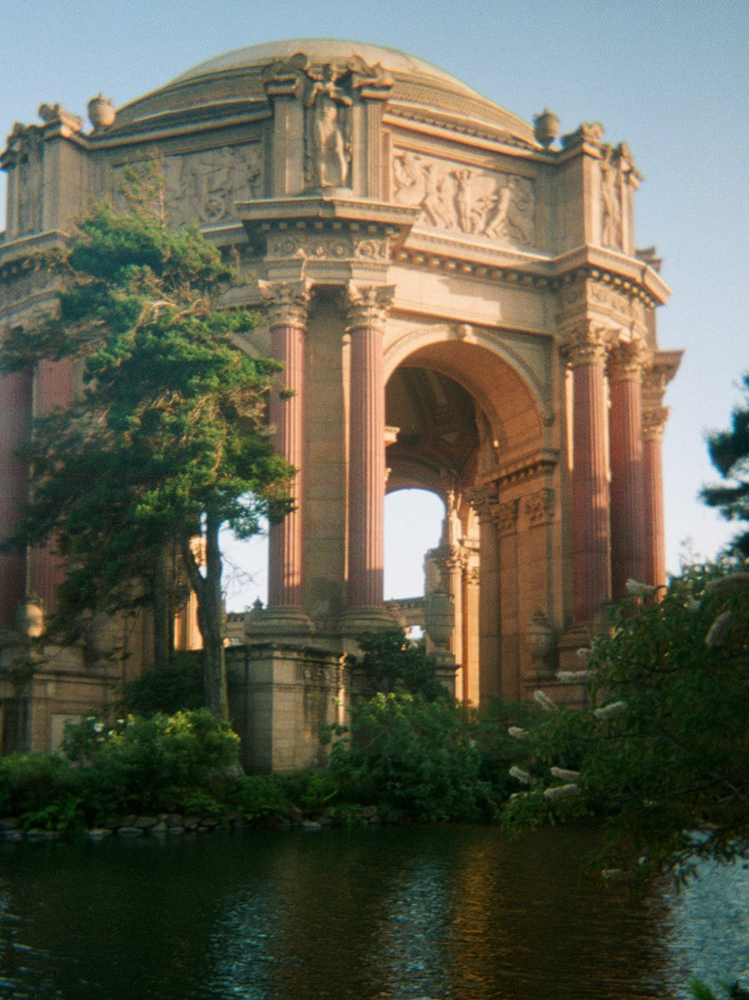
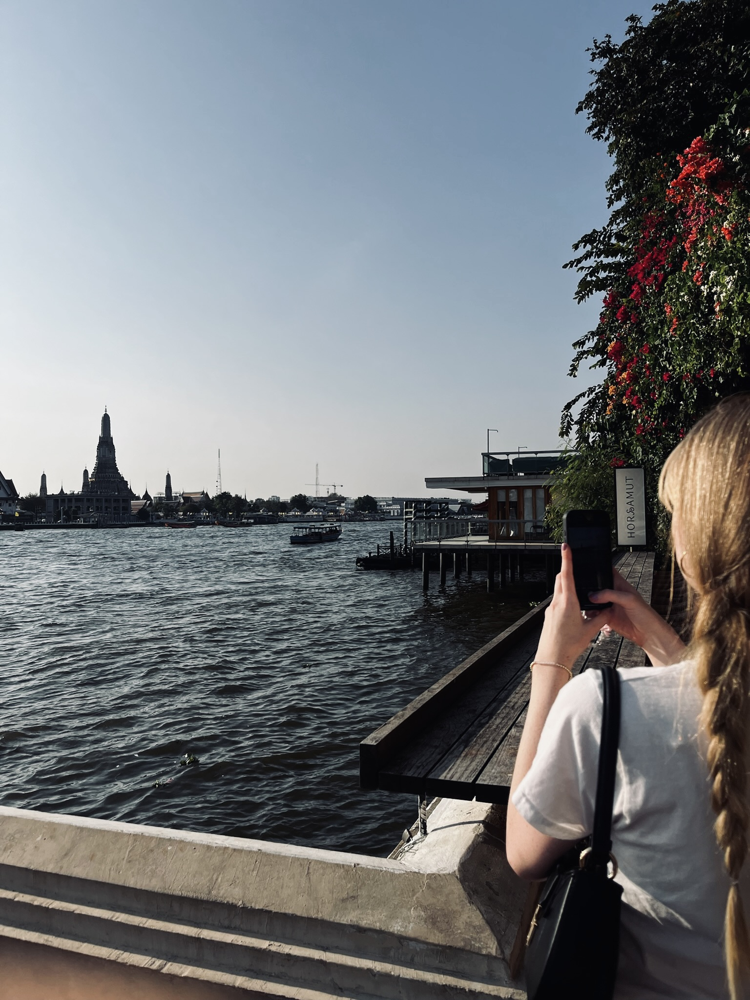
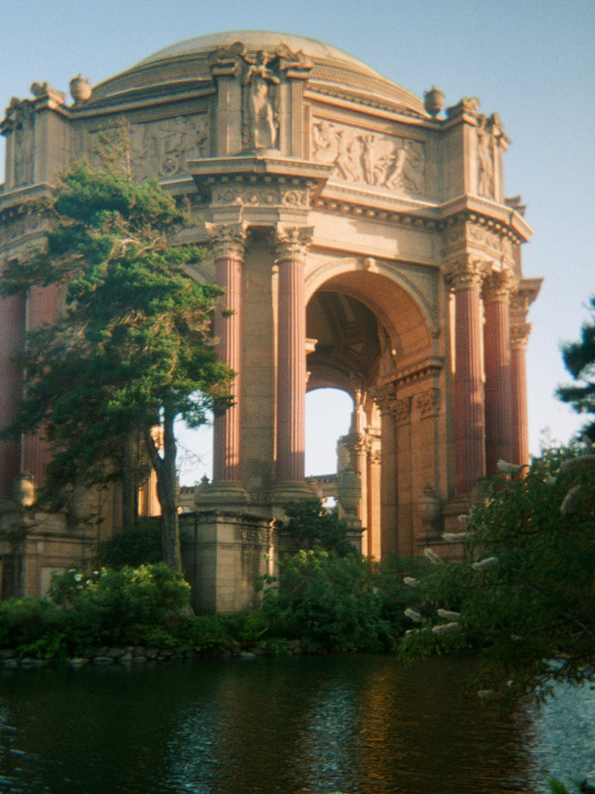
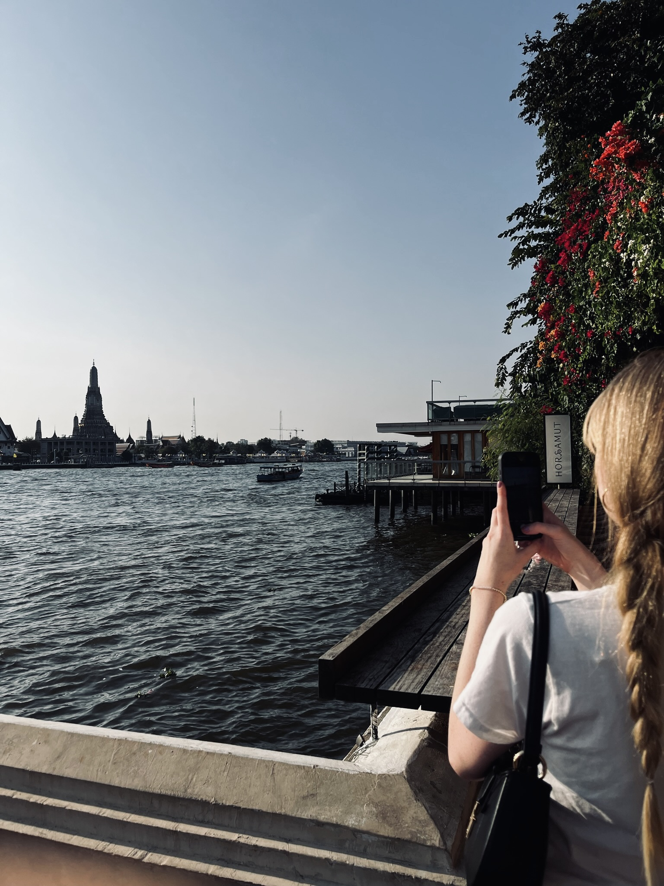
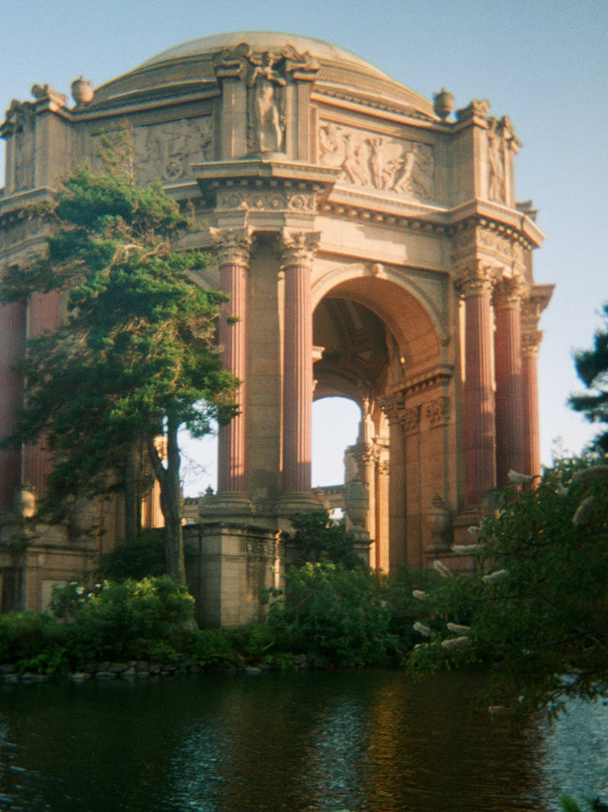
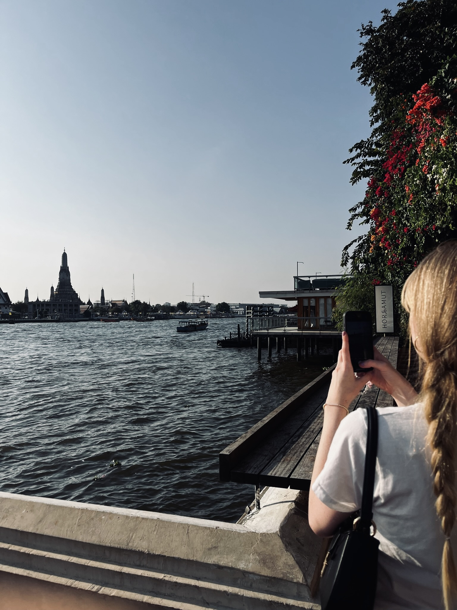
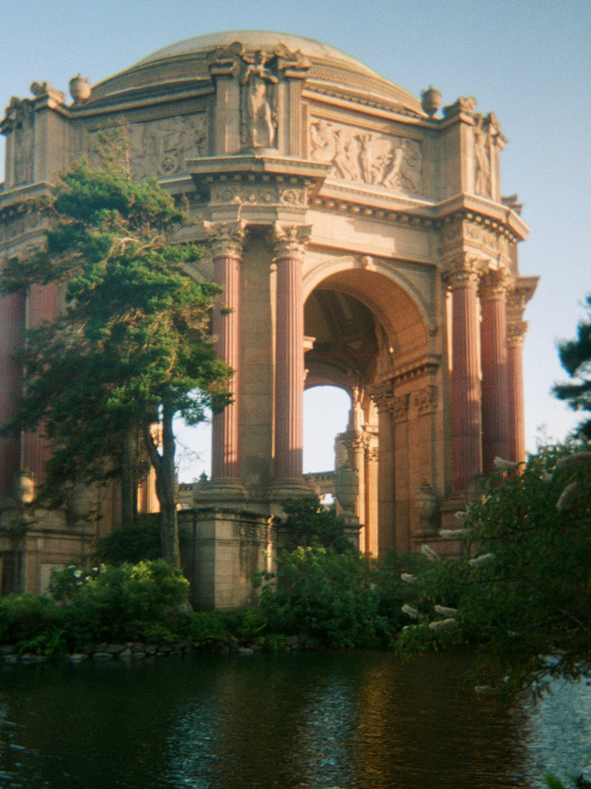
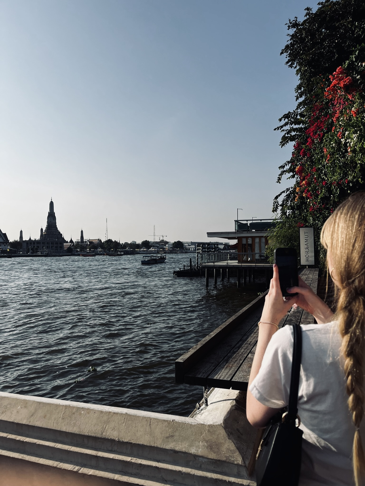

My life on the internet versus offline is vastly different. When I finally disconnect from my phone, I feel a sense of peace and relief from all the anxieties that come with school, work, and social life. Offline, I can simply be present without the pressure of having to keep up with everything. I especially love spending time by the water, where I’m able to find that sense of calm and clarity.